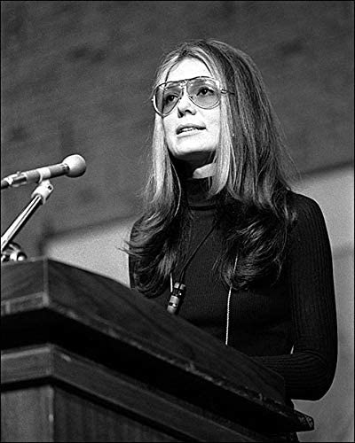

Gloria Steinem
Gloria Steinem es una feminista, activista política y periodista estadounidense. Destacada portavoz feminista desde mediados del siglo XX, ayudó a lanzar una variedad de grupos y publicaciones dedicados a promover los derechos civiles.
Leer más